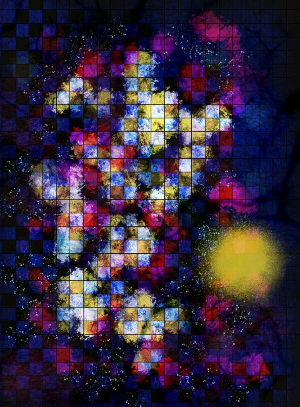
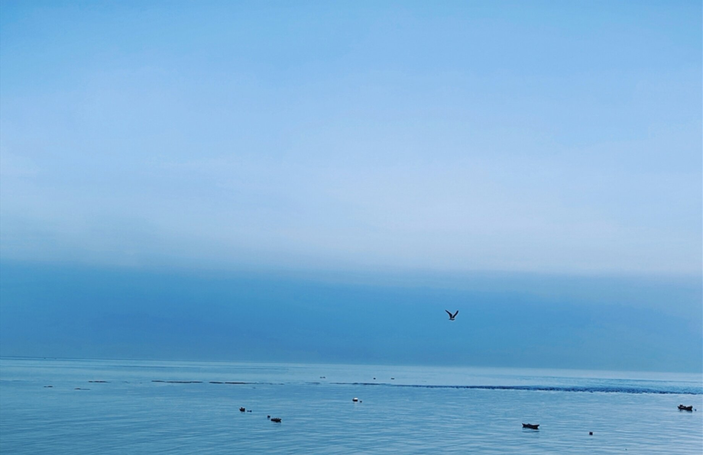
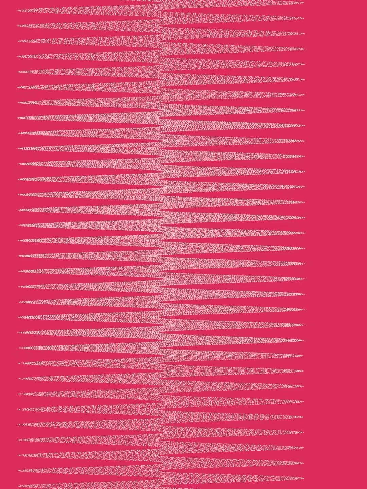
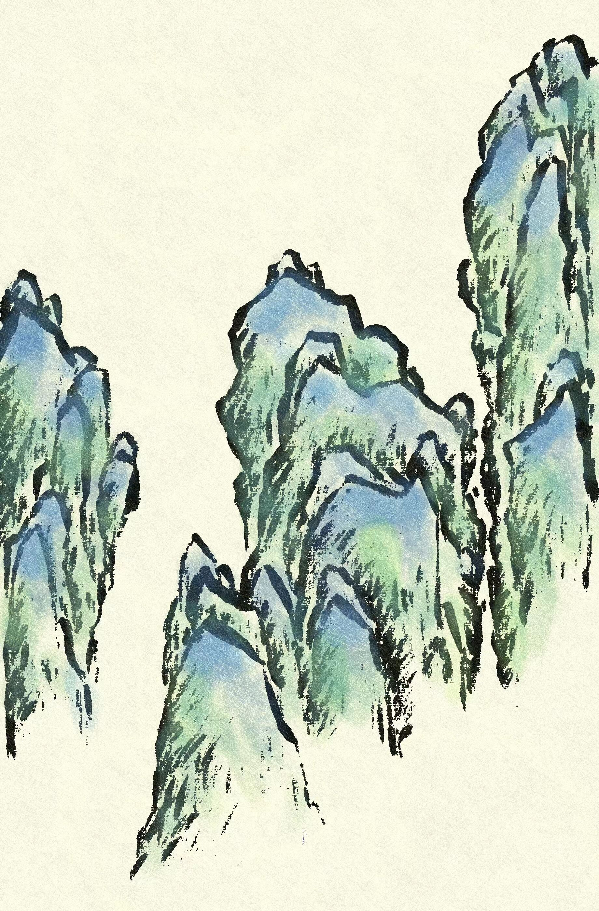
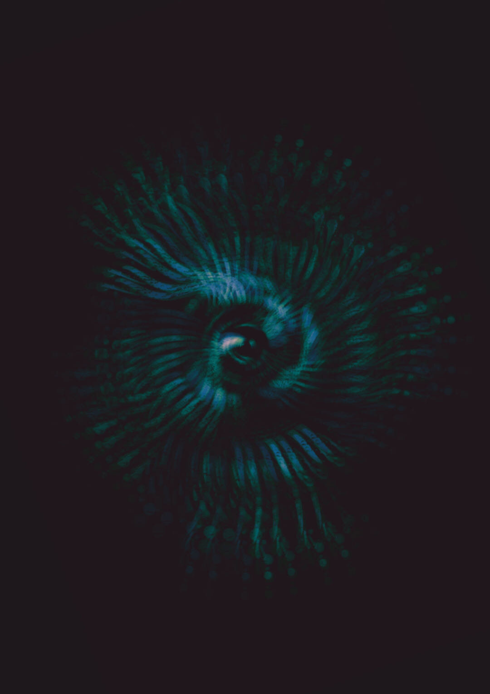
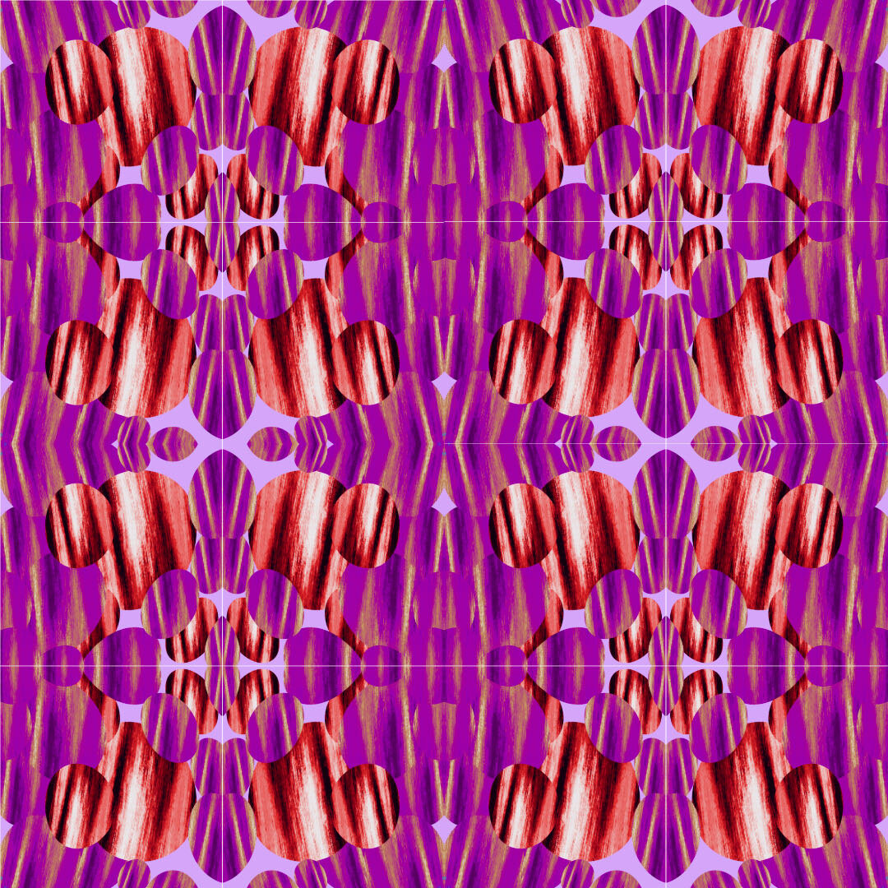
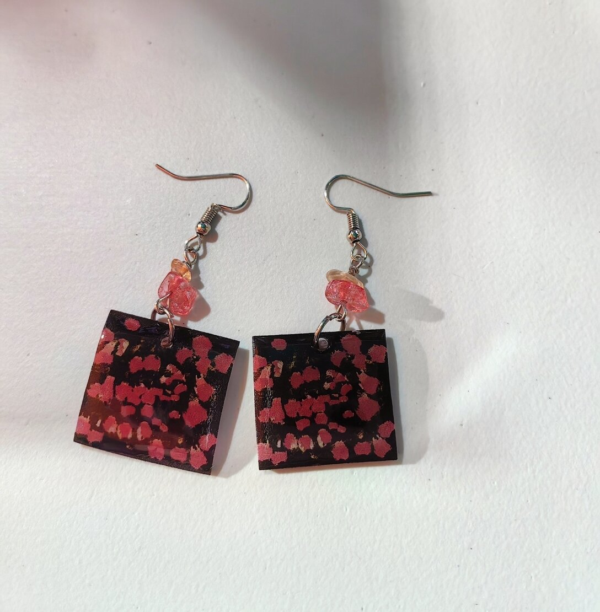
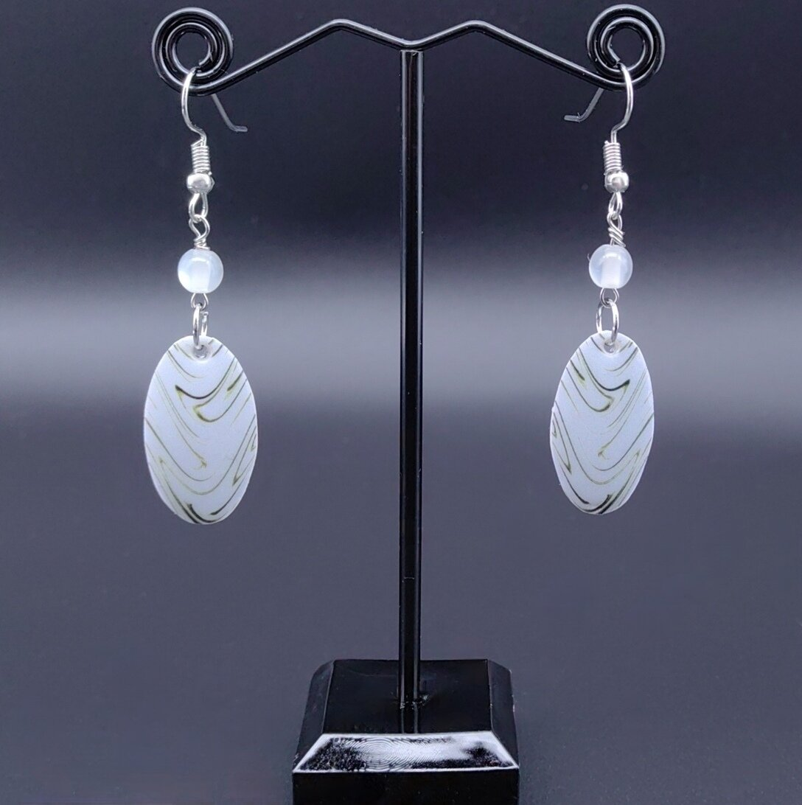
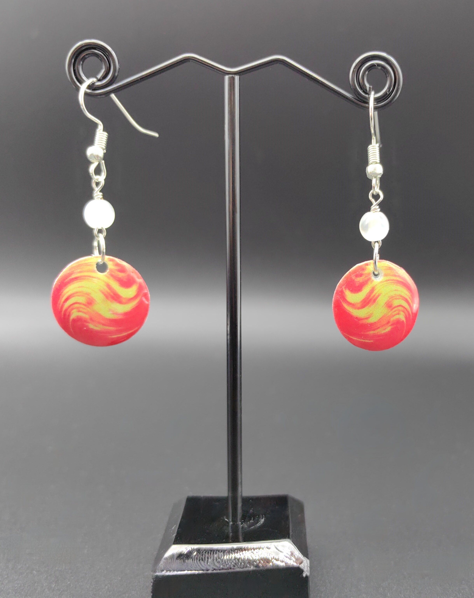

Blooming with Pride


My Vigor. My Heartbeat.
Waltz
Heartbeat 01

A Broken Heart Is an Open Heart
Dance! Dance!
Rolling On

Illuminated
My Fantasy. My Dreamland.


Photography

.jpg)
.jpg)

.jpg)
.jpg)
Illustration








Craft








Generative Art
Fountain
City

Cloud 01

Cloud 02

Pattern 01

Pattern 04

Pattern 07

Pattern 10

Pattern 13

Pattern 16

Pattern 02

Pattern 05

Pattern 08

Pattern 11

Pattern 14

Pattern 17

Pattern 03

Pattern 06

Pattern 09

Pattern 12
Pattern 15
Pattern 18
AI
太阳的涟漪 | Ripples of the Sun


.png)
.png)
.png)
.png)
.png)
.png)
.png)
Blog & Podcast
Music & Lyrics

Artist
Bloomying
0:00
3:25
Lyrics by Bloomying & Claude
Music by Suno AI
A heart that feels too deep to hide
A spirit too wild to confine
Paper cranes and childhood dreams
Of colors flowing endlessly
Every sketch beneath my bed
Every song inside my head
Wasn't just a passing phase
But my soul trying to say
Tried to fit into their world
Oh, how many times I failed
Till I learned this simple truth:
Some hearts can't be contained
Now I know with open eyes
I was born with colors in my soul
And melodies that had to flow
Art's not what I chose to do
It's the air I breathe, it's true
Though I learned this truth so late
Every detour had its place
Now I understand at last
Why my heart beats this way
They say I feel too much, too deep
But that's what makes my art sing
Success they said would set me free
But chains of gold still felt like chains
The path they chose felt like a cage
Though lined with golden praise
But art kept calling through the years
Like sunlight through the haze
No more loving from afar
Other artists' distant stars
Time to turn that love within
Let my own light begin
Through the darkness and through the light
I've got worlds left to create
With melancholy and with joy
This is who I'm meant to be
An artist, finally me
Every color, every line
Tells the story that is mine
Like a river finding sea
I'm becoming who I'm meant to be
Watch me paint across the sky
With colors only I define
This is where I'm meant to be
An artist, wild and free
让我入侵你的生命
Bloomying
0:00
4:15
Lyrics by Bloomying
Music by Doubao
让我入侵你的生命
让我占有你的时间
让我见证你的绽放
让我看见你的哀伤
让我沉入你的海洋
让我摇曳你的迷航
让我沐浴你的晴朗
让我徜徉你的梦想
让我忘记所有夜晚
让我铭刻你的光芒
让我终结你的流浪
让我成为你的希望
让我沉入你的海洋
让我摇曳你的迷航
让我沐浴你的晴朗
让我徜徉你的梦想
让你终结我的流浪
让你成为我的希望